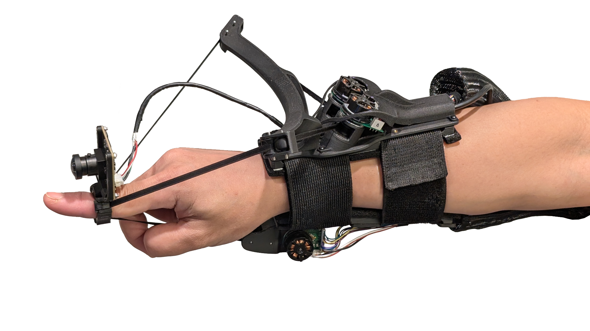
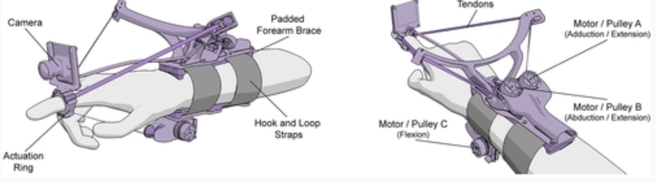
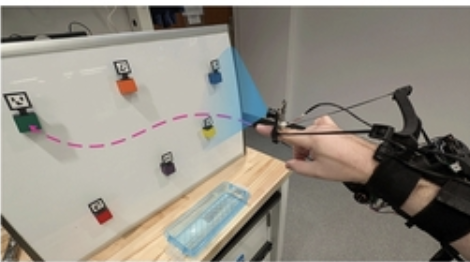

Localizar objetos
Ayudar a mover la mano hacia un objeto cuya posición ya haya identificado otro sistema.
DISPOSITIVO HÁPTICO · 2025-2026
Un anillo que indica una dirección sin necesidad de mirar
NURing es un dispositivo experimental desarrollado por un equipo de la Universidad Northwestern, en Estados Unidos. Se presentó en una investigación de 2025 y se siguió estudiando durante 2026.
Los motores se llevan en el antebrazo y están conectados a un pequeño anillo en el dedo índice. Su función es indicar hacia dónde mover la mano mediante una pequeña fuerza en el dedo.
La persona nota esa señal y mueve su propio brazo para seguirla. El dispositivo orienta el movimiento, pero no arrastra el brazo por la fuerza.

Para este trabajo queríamos evitar elegir simplemente otra versión de un teclado, un ratón o una pantalla. Buscábamos una tecnología física reciente que ofreciera otra manera de comunicarnos con los ordenadores y que, además, pudiera tener una utilidad real para las personas.
Una de las opciones que consideramos fue Glide, de Glidance. Es un dispositivo inteligente de dos ruedas que guía a personas ciegas o con baja visión cuando caminan y las ayuda a evitar obstáculos. Al principio puede recordar a un «perro guía robótico». Sin embargo, su fabricante lo presenta como una tercera opción de movilidad, junto al bastón blanco y el perro guía. No tiene por qué sustituirlos.
No descartamos Glide porque sea peor. Es un dispositivo pensado para orientar a una persona durante sus desplazamientos, mientras que nosotros queríamos estudiar otra pregunta: ¿cómo puede un ordenador guiar nuestra mano hacia un objeto sin usar una pantalla ni instrucciones de voz?
Ahí es donde NURing nos pareció especialmente interesante. En lugar de mostrar una flecha o indicar la dirección mediante vibraciones, utiliza una pequeña fuerza física que inclina el dedo. No es la primera tecnología háptica que existe, pero su forma de comunicar la dirección es diferente de la de anillos anteriores, como FingerSight.
También nos interesó su futuro. NURing sigue siendo un proyecto de investigación, no un producto de uso cotidiano. Si algún día se combina con sistemas que reconozcan objetos y permitan escoger un destino, podría ayudar en tareas como localizar un utensilio o pulsar un botón sin depender de la vista. Es una posibilidad interesante, pero todavía no se ha demostrado que funcione de manera autónoma en la vida diaria.
NURing tiene unos motores sujetos al antebrazo y unos cables finos, llamados tendones, que llegan hasta el anillo. Los motores tensan estos cables y hacen que el dedo note una fuerza suave en una dirección.
La persona siente esa indicación y mueve su propia mano. El aparato no mueve el brazo por ella.

Esta es una de las preguntas más importantes. El anillo no elige el objetivo ni sabe por sí solo qué queremos tocar. En las demostraciones con cámara de 2026, los investigadores prepararon los objetivos con marcadores visuales para que el sistema pudiera localizarlos.

Un ejemplo para entenderlo: el botón «Abrir» de un ascensor. Si un sistema ya sabe dónde está ese botón y lo ha seleccionado como destino, NURing puede orientar el dedo hacia él. La persona es quien lo pulsa al final. Este ejemplo no implica que el prototipo pueda elegir por sí solo cualquier botón de un ascensor real.
Lo que todavía falta: las demostraciones con cámara utilizan objetivos preparados. No se ha demostrado un sistema general que permita a una persona identificar y escoger libremente cualquier botón u objeto de su entorno. Para conseguirlo, harían falta funciones adicionales de reconocimiento y selección de destinos.
La Interacción Persona-Ordenador (IPO) estudia cómo nos comunicamos con los sistemas informáticos y cómo se pueden diseñar para que resulten más útiles, sencillos y accesibles. No se limita a pantallas y programas: también incluye los dispositivos físicos con los que recibimos información.
Lo habitual es que un ordenador nos informe mediante imágenes, textos o sonidos. NURing utiliza otro canal: el tacto y la percepción de las fuerzas y del movimiento. Por eso es una interfaz háptica de salida: transforma una indicación calculada por el ordenador en una señal física que podemos sentir.
Más concretamente, emplea una señal cinestésica. El dispositivo desvía ligeramente el dedo para sugerir una dirección. En vez de tener que reconocer qué significa cada vibración, la persona recibe una orientación física y decide cómo mover el brazo. Esto no significa que sea automáticamente mejor que otros sistemas: harían falta comparaciones directas para afirmarlo.
Otra idea importante de la IPO es la retroalimentación continua. En la versión experimental que incorpora una cámara, el sistema comprueba la posición relativa del objetivo y ajusta la dirección mientras la mano se mueve. La persona responde a la señal y el ordenador vuelve a corregirla: ambos participan en el proceso.
El equipo de la Universidad Northwestern presentó NURing en 2025. Después aparecieron demostraciones con cámara en 2026 y, el 12 de agosto de 2026, se publicó un estudio en IEEE Transactions on Haptics. No es una actualización de un producto cotidiano, sino una tecnología experimental que sigue evolucionando.
En una de las pruebas del estudio de agosto, realizada con guiado en dos dimensiones y participantes con los ojos vendados, el error final mediano fue de 12,6 milímetros y el tiempo medio para alcanzar el objetivo fue inferior a siete segundos. Son resultados medidos en condiciones de laboratorio, no en el uso diario de personas ciegas.
Conviene distinguir las investigaciones: el estudio de precisión y las demostraciones con cámara y objetivos marcados no son la misma prueba. No podemos presentar las cifras de precisión como si se hubieran obtenido al reconocer libremente objetos en un entorno real.
Estos resultados no significan que NURing ya permita utilizar de forma autónoma cualquier pantalla táctil, encontrar cualquier objeto de una habitación o desplazarse por la calle. Todavía hace falta comprobar su utilidad en situaciones reales, con tareas variadas y con personas que tengan distintas necesidades visuales. También queda por resolver cómo se identifican los objetos y cómo el usuario escoge el destino.
Por eso creemos que es un buen ejemplo para estudiar la IPO: enseña cómo se puede cambiar el modo en que una persona recibe información del ordenador, pero también recuerda que un prototipo prometedor no es todavía una solución completa.
Una de sus aplicaciones posibles es la asistencia a personas ciegas o con baja visión, especialmente en tareas que requieren localizar algo al alcance de la mano sin verlo.
Ayudar a mover la mano hacia un objeto cuya posición ya haya identificado otro sistema.
Orientar el dedo hasta un botón cuando el sistema conoce su posición y el destino está seleccionado.
Mantener libre la yema del dedo para reconocer el objeto al tocarlo.
Importante: los resultados cuantitativos citados proceden de pruebas controladas con participantes con los ojos vendados. También hay demostraciones experimentales con cámara y marcadores, pero no se ha demostrado que NURing mejore por sí solo la autonomía cotidiana de las personas ciegas ni que permita escoger cualquier objeto de forma libre.
Antes de NURing ya existían dispositivos que ayudaban a guiar la mano a través del tacto. La diferencia más interesante está en cómo el ordenador indica la dirección.
Era un anillo con una pequeña cámara y cuatro elementos que vibraban. Cuando el sistema localizaba un objetivo, las vibraciones indicaban hacia dónde mover la mano. Su estudio apareció en línea en 2019 y en una revista científica en 2020.
Utiliza motores y cables para producir una pequeña fuerza en el dedo. En lugar de un patrón de vibraciones, la persona recibe una orientación física. Además, la yema del dedo queda libre para tocar.
Su aportación es una forma diferente de guiar el movimiento: el ordenador calcula una dirección y el anillo la comunica inclinando ligeramente el dedo. En las pruebas de laboratorio los participantes pudieron seguir esas señales sin mirar.
¿Qué pretende mejorar? NURing explora una alternativa a las indicaciones mediante vibraciones, que requieren aprender a interpretar las señales. Su sistema busca que la dirección se perciba de una forma más inmediata, sin tapar la yema del dedo. Eso no demuestra que sea superior a FingerSight en cualquier situación: no tenemos una comparación directa entre ambos dispositivos que permita afirmarlo.
Los enlaces siguientes permiten consultar el proyecto original, los estudios científicos de 2025 y 2026, y las tecnologías con las que lo hemos comparado.